A whole wizarding village opens up for the first time, from the sweets at Honeydukes to a steaming mug of butterbeer at the Three Broomsticks — and the Shrieking Shack on the lonely hill above the lane. Articles with place names. As-as similes. Polite suggestions. Shopping. Ordering. Used to for things that have changed.
Before we go into the village, let's warm up by remembering what we actually took home from the last three Katya lessons. Three mini-drills — one per lesson — to make sure the brain is in English before we step through the castle gate.
You met a lot of weird noun plurals in the Forbidden Forest. Pick the right form.
We will meet this grammar again in Section 04. Quick preview — the or nothing (∅)?
After certain verbs — gerund. After others — infinitive. Pick carefully.
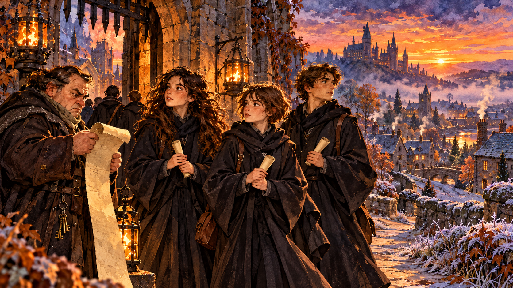
at the castle gate · a permission slip ticked off on a long listIn the first and second year, Hogsmeade used to be only a name on a map. You could see smoke from its chimneys from the Astronomy Tower, but you were not allowed to go. The rule was simple: no student under thirteen leaves the castle grounds.
By the start of the third year, that rule changes. Each student must bring a short slip of parchment, signed by a parent or guardian, promising that they understand the rules of the village and will come back before dark. The caretaker at the gate checks every name against his list. If your name is on the list, you may go. If it is not, you spend Saturday indoors with the ghosts.
On the first Saturday of October, the slip in your pocket feels very important.
We use used to + verb to talk about something that was true before but is not true now. It is only for the past.
| Positive | Negative | Question |
|---|---|---|
I used to live here. | I didn't use to like it. | Did you use to…? |
Note: in negatives and questions the second word is use, not used.
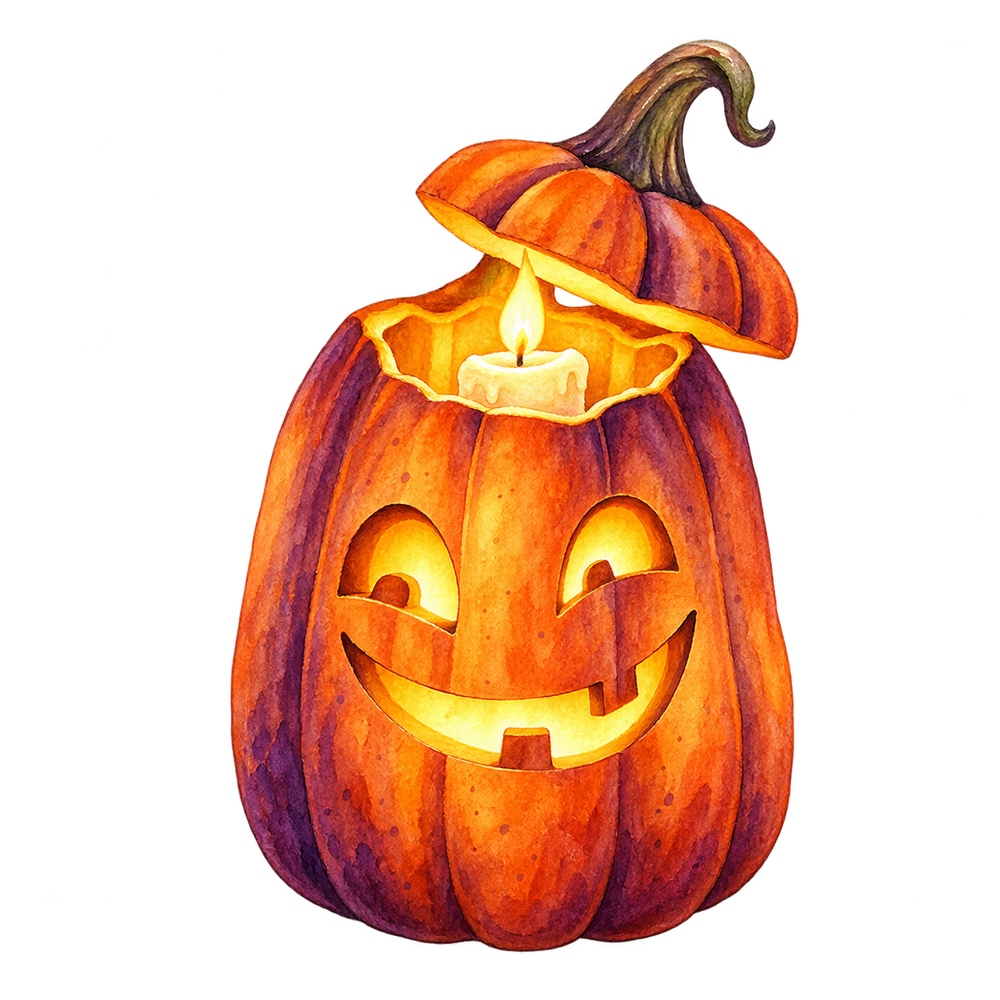
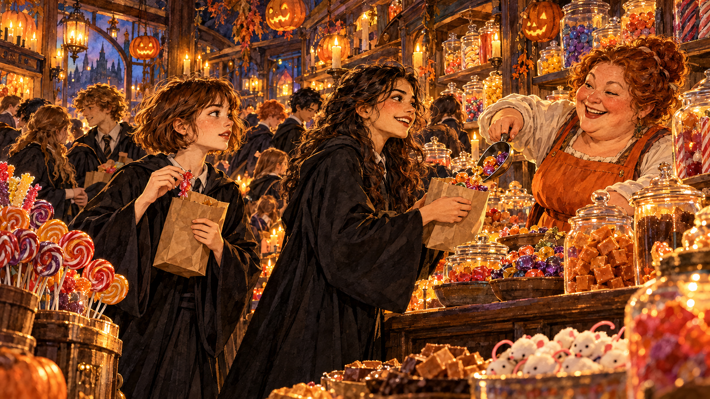
Honeydukes on a Saturday · lollipops, pumpkin fudge, Mrs Flume behind the counterThe first door you push open on the High Street is Honeydukes. The warm smell of melted chocolate hits you before your eyes have even got used to the orange candle-light inside. Jars of sweets climb the walls up to the roof: fizzing lollipops that spark on your tongue, soft toffees as long as your finger, chocolate frogs that still jump a little inside their boxes, and tiny white sugar mice with pink string tails.
Katya's eyes go to the Ice Mice — as cold as snow in your mouth, with a sudden squeak as you bite them. Her friend Masha wants the Fizzing Whizzbees — small round sweets that lift you three inches off the floor for one second. The owner, Mrs Flume, laughs and says most students buy both.
We compare two things of equal strength with as + adjective + as + noun. English has many fixed similes with animals and nature.
| Pattern | Meaning |
|---|---|
as sweet as honey | very sweet |
as cold as ice | very cold |
as light as a feather | very light |
as quick as lightning | very fast |
as quiet as a mouse | very quiet |
as warm as toast | very warm (cosy) |
as dark as midnight | very dark |
as loud as thunder | very loud |
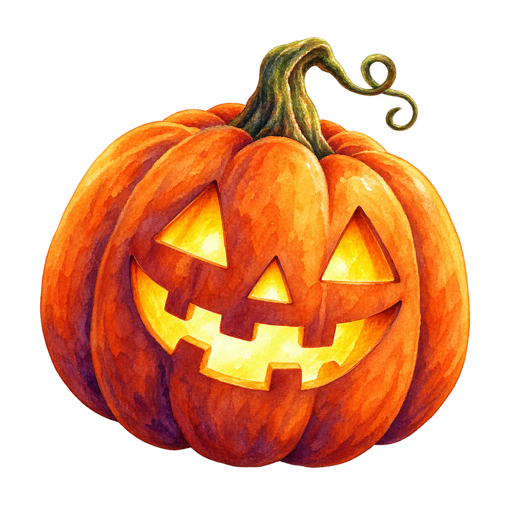
Shall we…? | Shall we try the fudge? |
Let's… | Let's share a bag. |
Why don't we…? | Why don't we buy both? |
How about…? | How about Ice Mice? (how about + noun or -ing) |
Mrs Flume at Honeydukes doesn't just hand you a bag — she asks a question. "How many Fizzing Whizzbees, dear? How much chocolate do you want?" One question uses many, the other uses much, and the reason is one of the most useful bits of English grammar you'll meet this year.
A countable noun is a thing you can count one by one: one sweet, two sweets, three sweets. An uncountable noun is a mass or a liquid — you can't count individual pieces: chocolate, water, bread, snow, time, money.
| Function | With countable (plural) | With uncountable |
|---|---|---|
| a lot | many sweets · a lot of sweets | much chocolate · a lot of chocolate |
| a small amount | a few sweets | a little chocolate |
| some / any | some sweets · any sweets? | some chocolate · any chocolate? |
| question "how" | How many sweets? | How much chocolate? |
| zero amount | no sweets | no chocolate |
Note: much is mostly for questions and negatives. In positive sentences we usually say a lot of instead: ✗ I ate much chocolate. ✓ I ate a lot of chocolate.
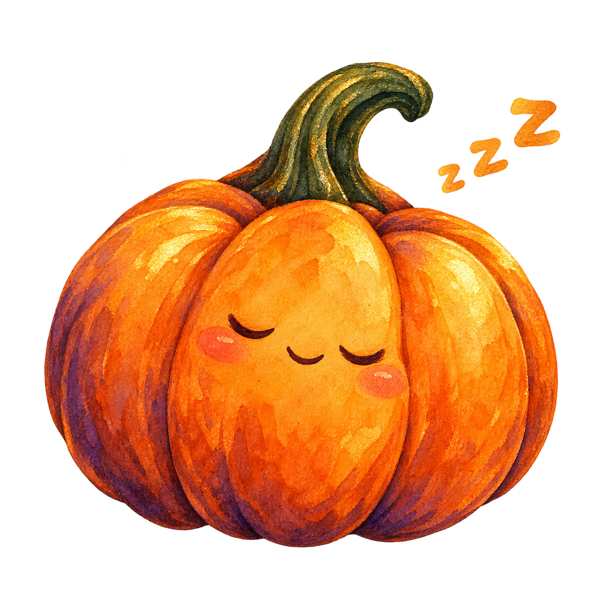
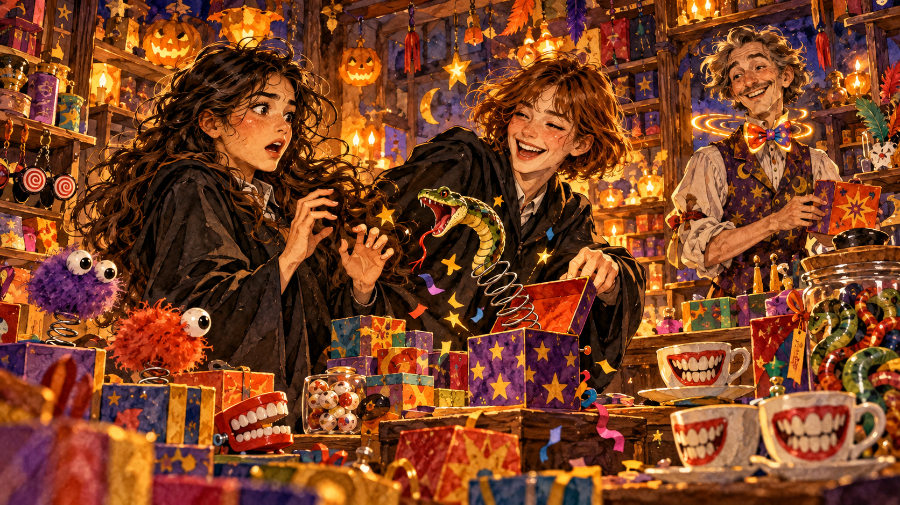
Zonko's · a jumping snake, a bowtie that spins, Katya startled, Masha laughingThree doors down the High Street is Zonko's Joke Shop. From the outside it looks very ordinary — a round yellow sign and a window full of small boxes. From the inside, it is complete, happy, loud chaos. Something explodes in a corner. A rubber snake jumps out of a jar on the counter and makes Masha scream. A set of small yo-yos on a shelf starts, one by one, to scream too.
Zonko himself, in a bowtie that spins on its own, grins at the two of them and says that today, as it is a Hogsmeade weekend, the Dungbombs are buy two, get one free. Katya is not interested in Dungbombs. She wants the Nose-Biting Teacup for her little brother at home.
| You want to… | Say… |
|---|---|
| ask the price | How much is this? / How much are these? |
| ask for a smaller / bigger one | Do you have a smaller one? / a bigger one? |
| say you want to buy | I'll take one. / I'll take two of these, please. |
| try before you buy | Could I try this on? / Can I taste this? |
| ask how to pay | Do you take card? / Can I pay in cash? |
| end the sale politely | Thanks very much. / That's all, thanks. |
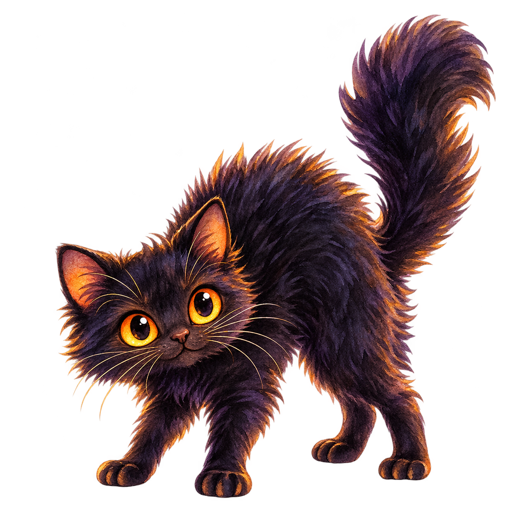
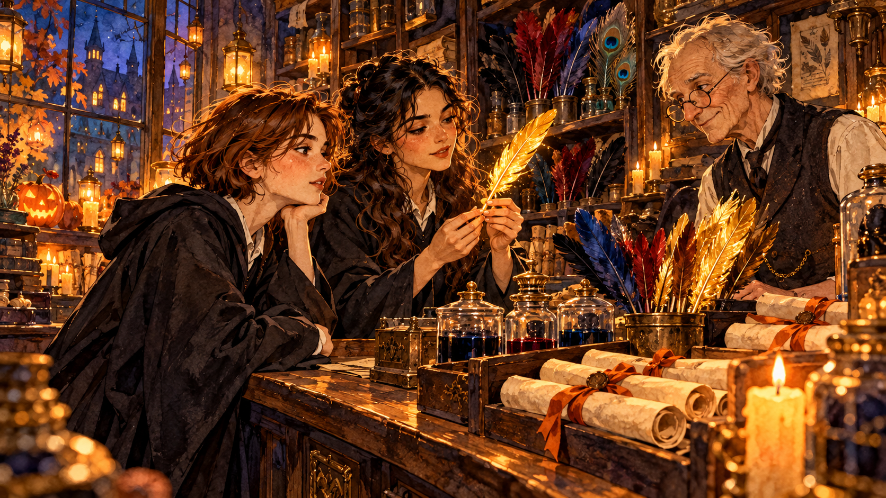
Scrivenshaft's · phoenix-gold quills, blue and orange ink, Mr Scrivenshaft in spectaclesThe third stop is Scrivenshaft's Quill Shop, three doors from Zonko's, where the lane bends to the right. If Honeydukes was warm and loud and smelled of toffee, Scrivenshaft's is quiet. The shop is narrow and tall. The ceiling is wooden. Every wall is covered with shelves, and every shelf is covered with quills — black raven quills for essays, soft swan quills for letters, bright peacock-blue quills for a girl's birthday, long phoenix-gold quills for prefects, and small cheap goose quills for a first-year's rough work.
In the middle of the shop stand tall glass jars of ink. Blue, black, red, invisible, colour-changing, and one jar with a hand-written label that just says "use with care". On the counter lies a stack of parchment, tied with a dark orange ribbon.
Mr Scrivenshaft himself is a thin old man in round spectacles. He is as quiet as a mouse, and he smiles without saying anything until a customer speaks first.
Many place names take the. Many others don't. The rule is small but strict. Learn these groups:
WITH the | NO article (∅) |
|---|---|
pubs & hotels with "the": the Three Broomsticks, the Hog's Head | shops named after the owner: Honeydukes, Zonko's, Scrivenshaft's |
streets with "the Big/Old/High": the High Street | most streets: Oxford Street, Diagon Alley |
unique buildings: the Shrieking Shack, the Astronomy Tower | schools & universities: Hogwarts, Beauxbatons |
rivers, seas, oceans: the Thames, the Atlantic | villages, towns, cities: Hogsmeade, London, Edinburgh |
mountain ranges: the Alps, the Highlands | single mountains: Mount Everest, Ben Nevis |
countries with "the Republic / Kingdom / United …": the UK, the USA | most countries: Scotland, Russia, France |
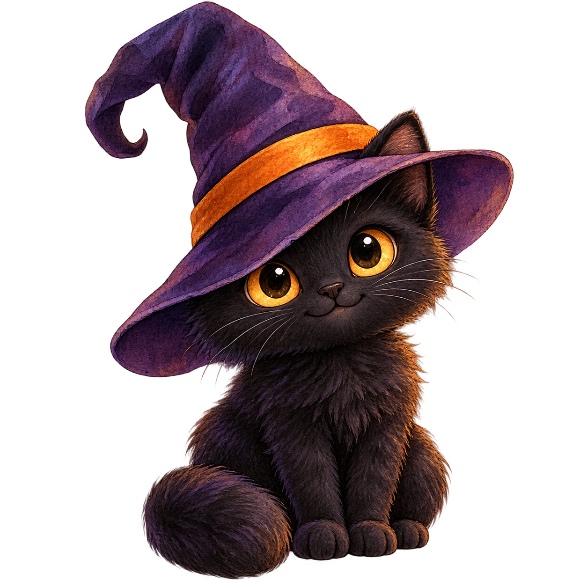
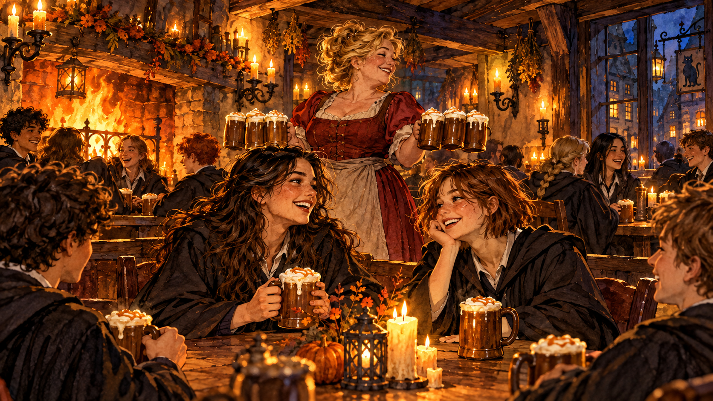
the Three Broomsticks · Madam Rosmerta with four mugs, foam, firelight, snow at the windowThe Three Broomsticks is the warmest place in Hogsmeade — not because it is close to the fire, but because the whole room is a fire. Dark wooden beams cross the low ceiling. A huge stone fireplace burns at one end. Round wooden tables are crowded with students, and every table has three or four tall brown mugs of butterbeer, each one wearing a hat of foam.
The landlady, Madam Rosmerta, moves between the tables carrying three mugs in each hand. Katya and Masha find a small table near the window with a view of the lane outside, where the snow has just started to fall in soft slow flakes.
| Function | Phrase |
|---|---|
| polite order | Could I have…? / Could we have…? |
| neutral order | I'd like… / We'd like… |
| decision after thinking | I'll have… / We'll have… |
| ask for a recommendation | What do you recommend? / What's good today? |
| end the order | That's everything, thanks. / That's all for now. |
| ask for the bill | Could we have the bill, please? |
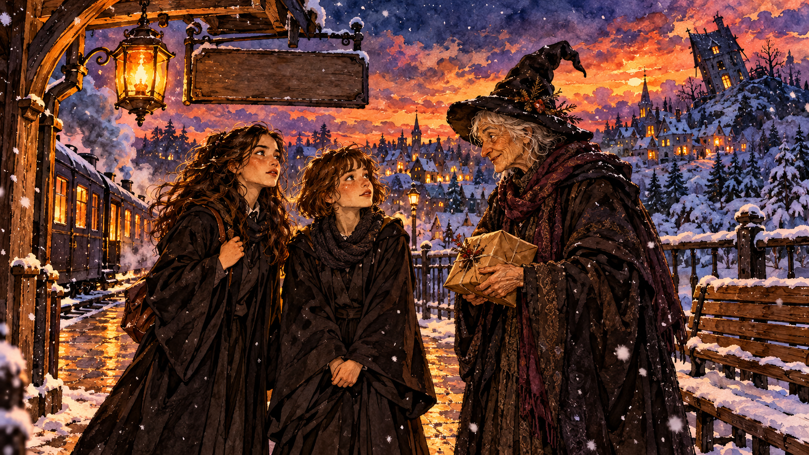
Hogsmeade Station · an elderly witch with a parcel · soft falling snowBy three o'clock the sun is already going down. The pumpkin lanterns in the shop windows start to glow brighter. Katya and Masha have one last place to see before the carriage back to the castle — the famous Shrieking Shack, on the hill above the village.
They are not sure of the way. At the small Hogsmeade Station, where the Hogwarts Express stops, an elderly witch stands on the platform with a parcel, waiting for the London train. Katya asks her the way.
| Asking | Answering |
|---|---|
Could you tell me the way to…? | Go straight / along… |
How do I get to…? | Turn left / right at… |
How far is it? | It's about X minutes on foot. |
Is it near here? | Keep going past… / Go up the hill. |
Which way is…? | You can't miss it. |
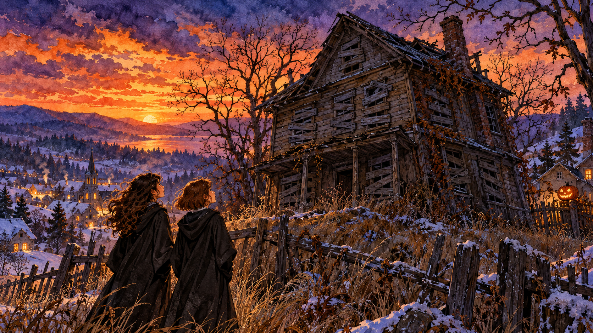
the Shrieking Shack · boarded windows · sunset orange going to purpleAt the top of the hill, the lane simply stops. There is a tumbledown wooden fence; a yard full of long dry grass; and behind the fence, leaning slightly, a two-storey wooden house with every window boarded up. No smoke from the chimney. No light in any window. Just a thin wind that moves the loose boards and makes them creak.
This is the Shrieking Shack. Even in the daytime it feels colder here than everywhere else in Hogsmeade.
Katya and Masha stand at the fence and look up. Masha is a little frightened. Katya reads the small painted sign on the gate:
"THE MOST HAUNTED BUILDING IN BRITAIN."
Nobody has lived in the Shack for many years. People say that long ago, screaming used to come out of it on full-moon nights. Villagers used to lock their doors as the sun went down. Children used to be told never to come up this hill after dark.
These days it is quiet. The screaming stopped a long time ago, and nobody really knows why. But the Shack is still here, and the villagers still don't like to pass it after sunset. Some things, Katya thinks as she turns to go back down the hill, are easier to leave boarded up than to open.
The Shack used to have people inside it. People used to be frightened of it. Villagers used to lock their doors. Each of these is a thing that was true in the past and is not true now.
Opposite in time: These days… / Now… / Not any more…
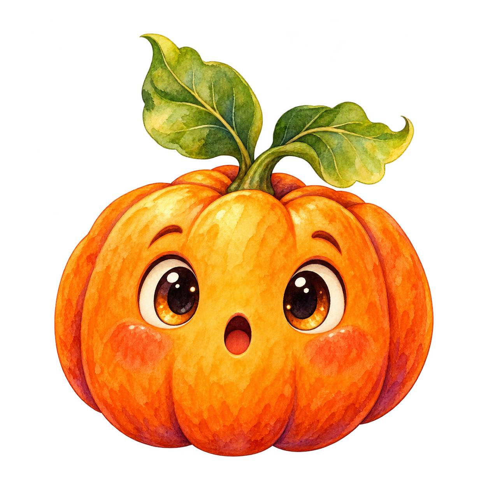
By the time Katya and Masha got back down the hill, the sun had almost gone and the pumpkin lanterns in every window of Hogsmeade were burning as bright as little suns. Snow was still falling, but softly now, the way snow falls at the end of a long cold afternoon when the sky has finally run out of weather.
In the square outside the Three Broomsticks a line of carriages was waiting — one for each school year, pulled by thin bony horses that most of the students pretended not to see. The last carriage for the third-years was almost full. There was only a little room left on one wooden bench near the door.
"Mind the step, dear," said the caretaker at the gate. "And give me your slip."
Katya handed over her permission slip. It was now a little bit crumpled from being stuffed inside her robes next to the sugar quills. The caretaker looked at the name, nodded once, and ticked a long list on his clipboard. Masha was already climbing in.
"How much did you spend?" asked Masha, as the carriage began to roll.
"Not very much," said Katya, who was more careful with her money than Masha was. "A few sickles at Honeydukes, two for the teacup at Zonko's, a little at Scrivenshaft's for a bottle of orange ink, and a lot of coppers at the Three Broomsticks."
"I spent nearly everything," said Masha, grinning. "But I've got a lot of Fizzing Whizzbees and a few Dungbombs for my brother. He didn't use to like practical jokes but now he loves them. It's a mystery."
They passed the Shrieking Shack as the last light left the sky. For one half-second, Katya thought she saw a thin orange light in one of the boarded windows — but when she looked again, there was nothing. Just an old wooden house on a dark hill, with the first stars coming out behind it.
"Did you see that?" she whispered.
"See what?" said Masha, with her mouth full of chocolate.
"Nothing," said Katya, and smiled to herself. Some things, she thought, are better kept in the pocket of your own head, like a sugar quill nobody else knows is there.
By the time the carriage rolled through the Hogwarts gates, the first snow of October had covered the lane behind them. Hogsmeade was closed for the night. The permission slip, now very crumpled indeed, sat warm in Katya's pocket. On the one next to it was already a plan for the next Saturday.
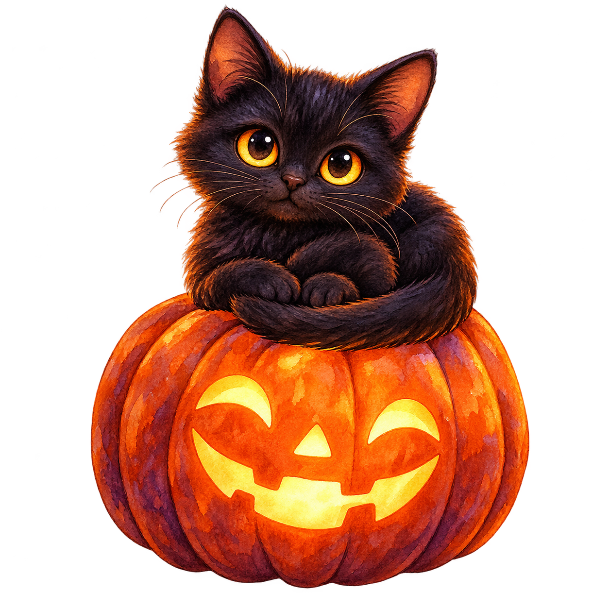
We use would like as a polite way to say want. The short form is 'd like.
| Form | Example |
|---|---|
| Positive | I'd like a mug of butterbeer, please. |
| Negative | I wouldn't like any sugar in my tea, thanks. |
| Question (offer) | Would you like some chocolate? |
| Question (choice) | Would you like tea or coffee? |
Compare: Do you like butterbeer? (= in general) · Would you like a butterbeer? (= now, as an offer).
Six stops · articles with place names · as-as similes · polite suggestions · shopping · ordering English · used to.
Next: a village of your own, in your own English.